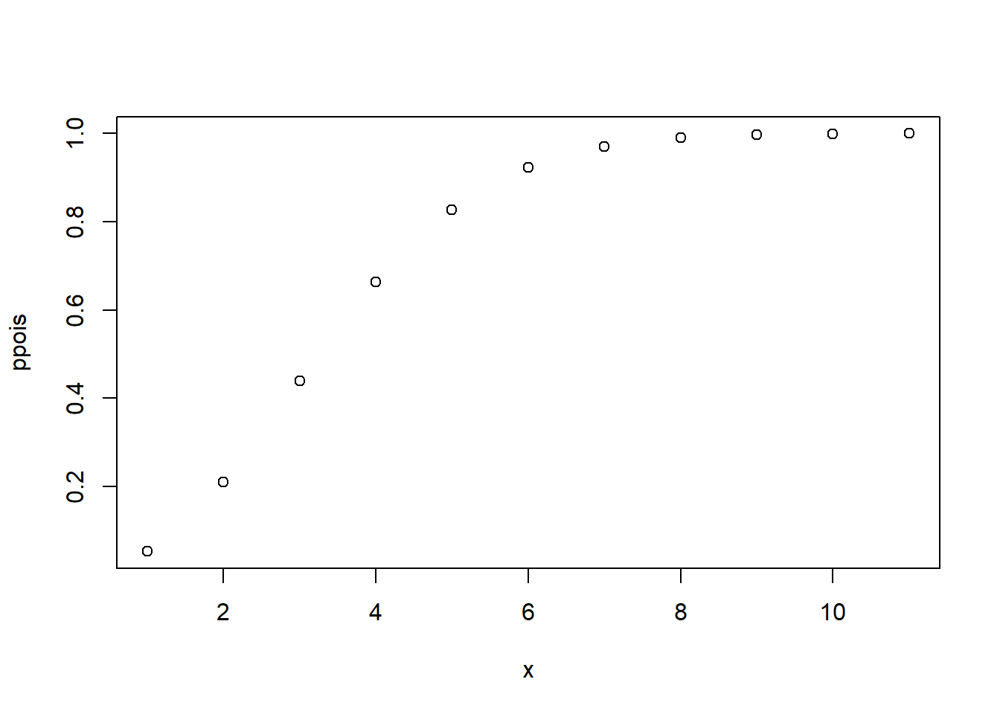
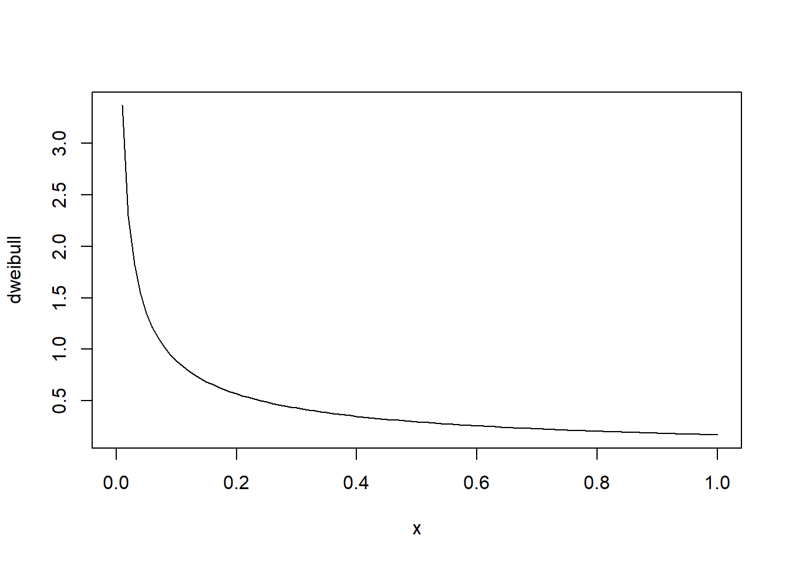
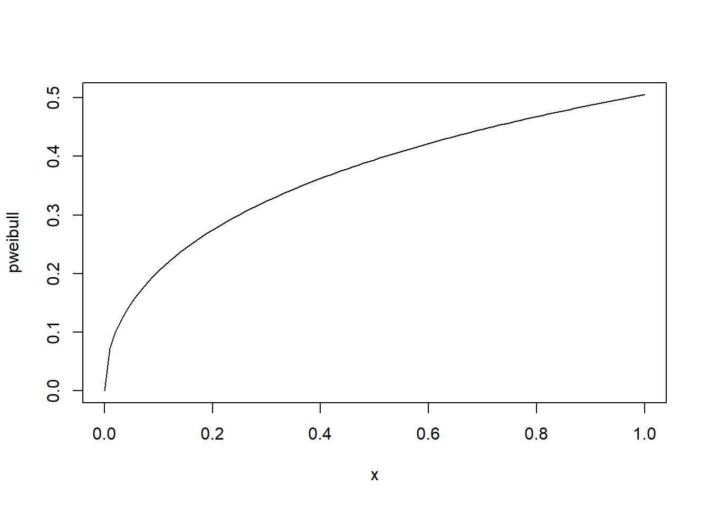
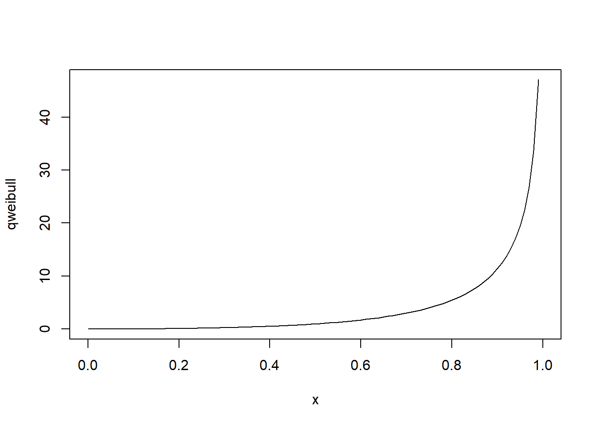
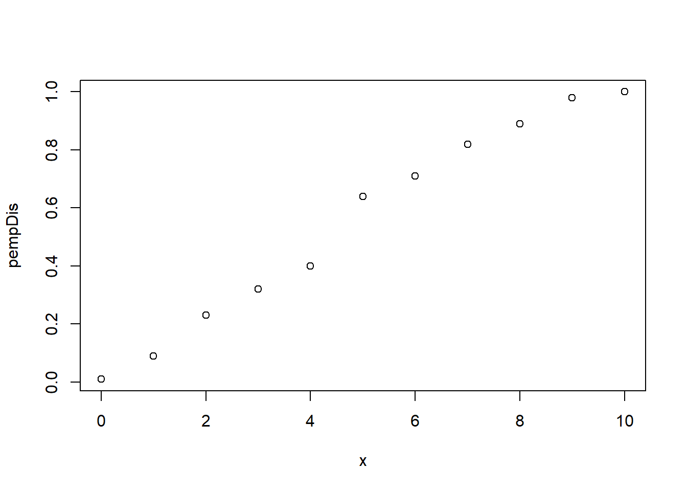
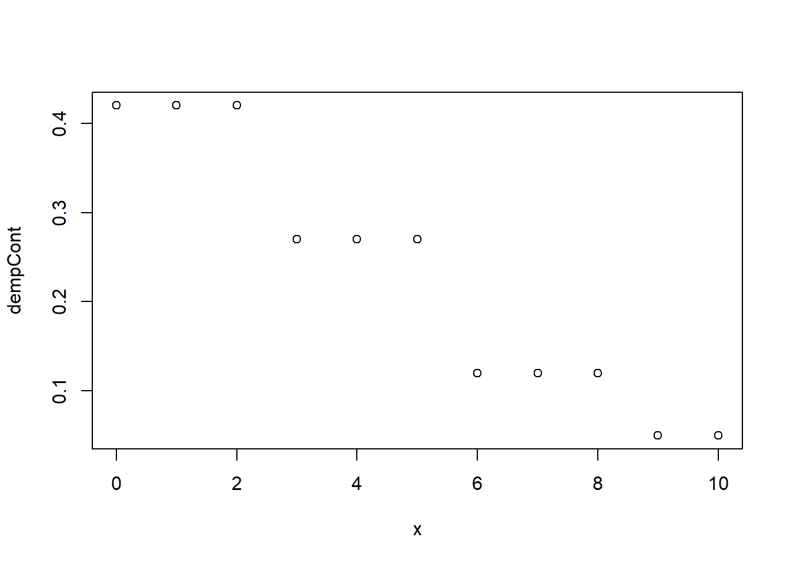
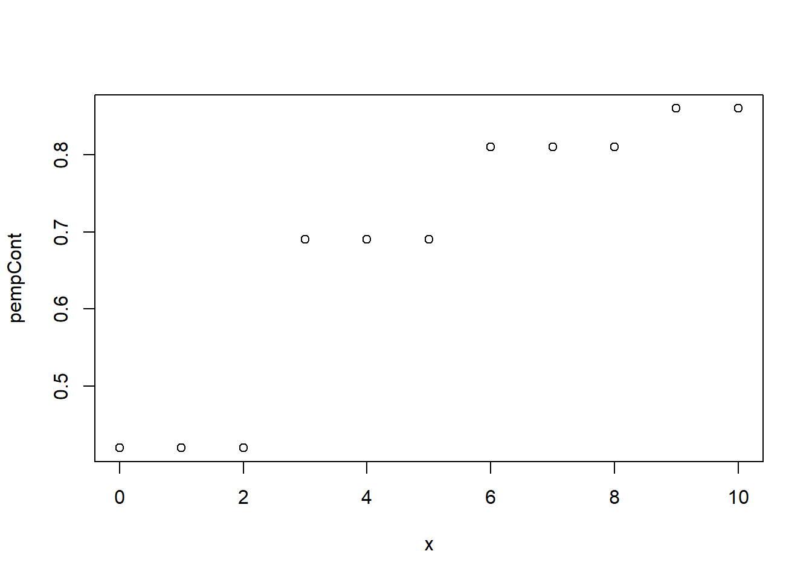
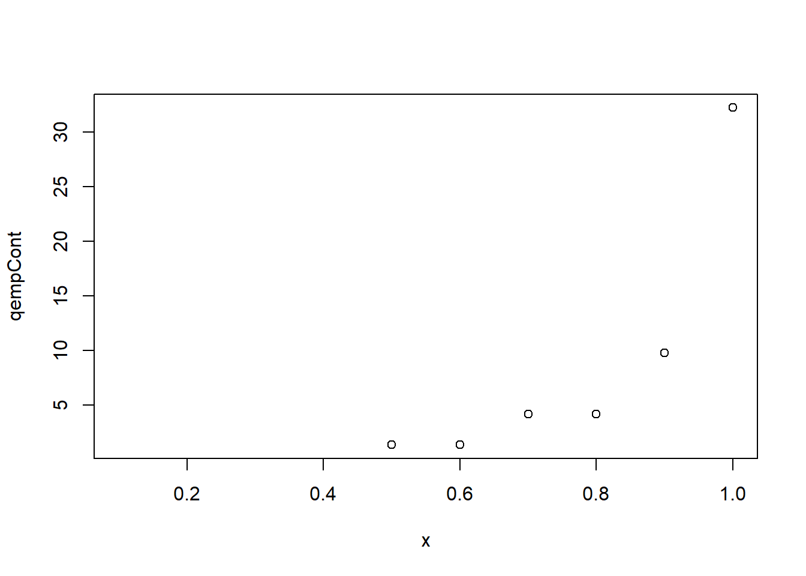

vignettes/introduction.Rmd
introduction.Rmdfitur is a package to provide wrapper functions for fitting
univariate distributions. The main function is
fit_univariate where you can supply numeric data to the
function along with the desired attributes of the distribution you want
to fit. It returns a list object with the density, distribution,
quantile, and random deviates functions based on the calculated
parameters from the given numeric vector. The parameter estimation is
done with MLE.
set.seed(42)
x <- rpois(1000, 3)
fitted <- fit_univariate(x, 'pois', type = 'discrete')
# density function
plot(fitted$dpois(x=0:10),
xlab = 'x',
ylab = 'dpois')
# quantile function
plot(fitted$qpois,
xlab= 'x',
ylab = 'qpois')
# sample from theoretical distribution
summary(fitted$rpois(100))## Min. 1st Qu. Median Mean 3rd Qu. Max.
## 0.00 1.00 3.00 2.75 4.00 10.00
# estimated parameters from MLE
fitted$parameters## lambda
## 2.93
set.seed(24)
x <- rweibull(1000, shape = .5, scale = 2)
fitted <- fit_univariate(x, 'weibull')
# density function
plot(fitted$dweibull,
xlab = 'x',
ylab = 'dweibull')
# distribution function
plot(fitted$pweibull,
xlab = 'x',
ylab = 'pweibull')
# quantile function
plot(fitted$qweibull,
xlab = 'x',
ylab = 'qweibull')
# sample from theoretical distribution
summary(fitted$rweibull(100))## Min. 1st Qu. Median Mean 3rd Qu. Max.
## 0.00001 0.18442 1.18814 4.83963 5.18201 81.99765
# estimated parameters from MLE
fitted$parameters## shape scale
## 0.4879054 2.0564428The package also allows users to specify empirical distributions. For discrete distributions, the function will not truncate any integer values with the given input. For continuous distributions, the function will create bins using the Freedman-Diaconis rule.
set.seed(562)
x <- rpois(100, 5)
empDis <- fit_empirical(x)
# probability density function
plot(empDis$dempDis(0:10),
xlab = 'x',
ylab = 'dempDis')
# cumulative distribution function
plot(x = 0:10,
y = empDis$pempDis(0:10),
#type = 'l',
xlab = 'x',
ylab = 'pempDis')
# quantile function
plot(x = seq(.1, 1, .1),
y = empDis$qempDis(seq(.1, 1, .1)),
type = 'p',
xlab = 'x',
ylab = 'qempDis')
# random sample from fitted distribution
summary(empDis$r(100))## Min. 1st Qu. Median Mean 3rd Qu. Max.
## 1.00 3.00 5.00 4.71 7.00 10.00
empDis$parameters## 0 1 2 3 4 5 6 7 8 9 10
## 0.01 0.08 0.14 0.09 0.08 0.24 0.07 0.11 0.07 0.09 0.02
set.seed(562)
x <- rexp(100, 1/5)
empCont <- fit_empirical(x)
# probability density function
plot(x = 0:10,
y = empCont$dempCont(0:10),
xlab = 'x',
ylab = 'dempCont')
# cumulative distribution function
plot(x = 0:10,
y = empCont$pempCont(0:10),
#type = 'l',
xlab = 'x',
ylab = 'pempCont')
# quantile function
plot(x = seq(.1, 1, by = .1),
y = empCont$qempCont(seq(.1, 1, by = .1)),
type = 'p',
xlab = 'x',
ylab = 'qempCont')
# random sample from fitted distribution
summary(empCont$r(100))## Min. 1st Qu. Median Mean 3rd Qu. Max.
## 1.394 1.394 4.205 4.871 4.205 32.200
empCont$parameters## (-0.0217,2.81] (2.81,5.6] (5.6,8.4] (8.4,11.2] (11.2,14]
## 0.42 0.27 0.12 0.05 0.06
## (14,16.8] (16.8,19.6] (19.6,22.4] (22.4,25.2] (25.2,28]
## 0.01 0.04 0.01 0.01 0.00
## (28,30.8] (30.8,33.6]
## 0.00 0.01